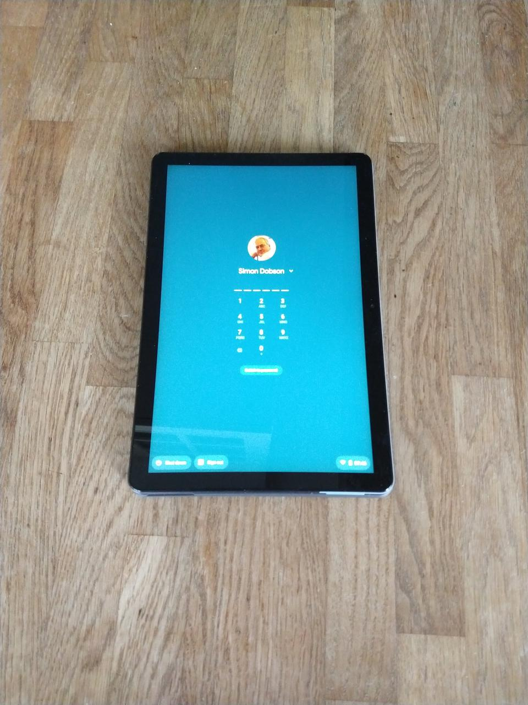

A Chromebook that behaves like a proper tablet.
While I do most of my work on a desktop these days, writing and browsing are better in an easy chair, which is why I became an avid user of tablets. (I’m too old to read much on a phone.)
I’ve had two Amazon Fire tablets in recent years. Cheap as chips, but not all that easy to live with given that they don’t run full Android. The latest one (a Fire 8” HD) I upgraded so that it used a “proper” app store and had full Google services, but that’s still not entirely seamless.
Then I heard about the Lenovo Duet. A 10” chromebook where the keyboard detaches and the leaves the screen part as a stand-alone tablet. It’s been done before, but the reviews suggested Lenovo had managed to get the experience just right. But the real decider was the price: £320 for 4Gb of RAM and a 128Gb SSD — for comparison that’s about twice the price of an 8” Fire. I coupled it with a stylus (a £49 Broonel, but any USI stylus should work) and a soft case (£11).


I’ve now had this for three months, and the experience is entirely positive — with a couple of minor provisos.
Firstly, the positives: it works pretty much perfectly as a tablet. The build quality of the tablet is excellent. I’ve seldom attached the keyboard, although of course I’m entirely based at home at the moment next to proper computer, so there’s been no call to do so. Because Chrome OS incorporates Android it has all the apps I need and more (including some very distracting sketching apps that really leverage the stylus). The battery life is fantastic, In excess of ten hours of normal usage.
Chrome OS also now has a full Debian-based Linux disro running under containerisation, which I haven’t fully explored but which I ascertained early on can run Emacs:

There are some negatives, although they mostly feel almost churlish at the price. The keyboard is a bit flimsy, its build quality isn’t great compared to the tablet part, and it’s sometimes sensitive to exactly how it gets attached to the screen. I wouldn’t want to use it for much more than note-taking. The stand is landscape mode only. The performance isn’t fantastic, and it feels sluggish when re-starting from sleep mode. There are also a few funnies with apps that think they’re on a machine with a keyboard and don’t transition to tablet mode perfectly: 1Password asks you to press Control-Shift-X to unlock it, for example. I’m sure this will be fixed as dual-mode systems become more common.
Less trivial is that the USB C port can’t drive an external display, either directly or using a dongle as is the case for the Macbook Pro. This is rather mystifying in a machine that otherwise would do me as a laptop replacement: I need to be able to do presentations. There’s apparently a workaround to the issue, which I haven’t tried and which is unnecessarily baroque in any case.
All in all, an excellent purchase for anyone wanting a good, cheap tablet: the keyboard is really just a bonus that’s worth having for even occasional use.
(And what became of the two Fires? The more recent one now acts as a music streamer in the kitchen, plugged into a powered speaker. The older one is finding use as a weather station front-end. I like the fact that these systems are powerful enough and open enough to /have/ such afterlives, so that upgrading doesn’t lead immediately to waste.)